# Tell R to print out some words on screen with the "print" command
print("Hello World!")[1] "Hello World!"If RStudio is not installed on your computer, you can create a free account on posit.cloud. Create the account with your credentials and follow the instructions to create a new project. Once done, you should see something like this on your screen:
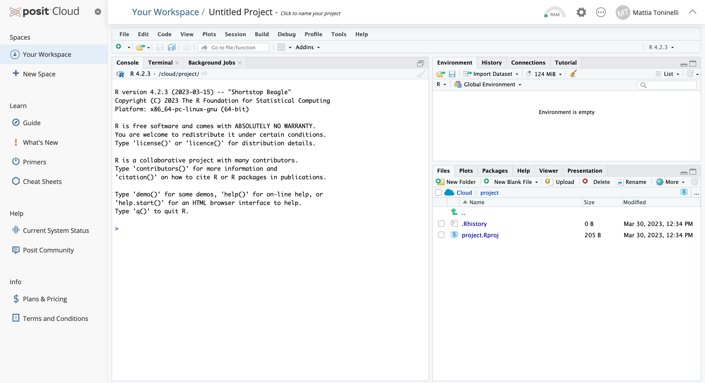
This is your working interface, the bottom right section shows your current file system (on the cloud) which is now pointed to the place where the Rproject you just created lives. The section on the left currently displays your console, where you can type R code interactively.
You should see your cursor on the left-hand side of the screen blinking. That window represents the R console. It can be used to “talk” with R through commands that it can understand!
For example, try typing the following in the console and check what comes out (a.k.a. the output):
# Tell R to print out some words on screen with the "print" command
print("Hello World!")[1] "Hello World!"One of the main aspects of any programming language including R is the ability to create variables. You can think of variables as ways to store objects under any given name. Let’s take the previous example and store the Hello World! character (known as a string) in a variable that we call my_variable. The creation of a variable in R is classically done through the assignment operator <- (or a classic =).
# Let's assign the statement to a variable (nothing happens when running this code)
my_variable <- "Hello World!"
# Let's display the content of the new variable!
print(my_variable)[1] "Hello World!"💡 What happened in the top right part of your screen when you ran the code lines above? Check out the “environment” section, you should see that
my_variableappeared there!
As we said, the R language was built with statistics in mind, hence we can use it to perform mathematical operations with ease, much like a fancy calculator.
print(6 / 2)[1] 3In R, numbers, text and combination of the two can be represented in either vectors or lists. You can think of lists as an extension of vectors where elements can be heterogeneous and named. Let’s create a vector with numbers (with the c() command) and use it to display the way that functions work in R.
myvector <- c(1,2,3,4)Let’s find the mean value of this vector! Now we can either do this manually by summing all its elements and divide by their number, or we can use a function to do so, intuitively enough, the function we can use is the mean().
mean(myvector)[1] 2.5💡 You can think of functions as a small piece of code that does something that normally would be done many times by repeating the code itself. Functions avoid the need for code repetition. We will encounter many functions later on, simple ones like
c()and very complex ones!
Without going too much into the details of all the available objects used to store data in R, one of the most abundantly used is the data.frame. Think of data.frames as the R equivalent of Excel spreadsheets, so a way to store tabular data. As we will see later, pretty much all the data we are going to handle will be in the form of a data.frame or some of its other variations. In the end, you can think of a table as a collection of lists of the same length (each column being one).
# Let's create and display a data frame (a table) with four rows and two columns
data.frame("Class"=c("a","b","c","d"), # First column
"Quantity"=c(1,10,4,6)) # Second column Class Quantity
1 a 1
2 b 10
3 c 4
4 d 6You have now instructed R to do something for you! We will ask it to do plenty more in the code chunks below!
In the console we can type as many commands as we want and execute them sequentially. Nevertheless, commands typed in the console are lost the moment they are executed and if we want to execute them again we need to type everything back in the console all over again… this is painful!
A script is just a normal text file (a very primitive version of Word without the fancy formatting) which groups a series of commands that R can execute sequentially, reading the file line-by-line. This is much better because we can then edit the file and save the changes!
💡 Since the text file is read by
Rline-by-line it is essential that you get the order of operations correctly, otherwiseRwill get easily confused. In this case it is useful to think of a script as a cooking recipe where the order of operations is paramount! 👨🏻🍳
Follow the movie below to create an R script in Posit, the same applies to Rstudio, notice the .R extension at the end of the file name.

The new window that appeared on the upper left represents your R script. In here we can write R code which DOES NOT get executed immediately like in the console before.
💡 In order to execute code from the script, highlight the code line you want to execute (or put your cursor line on it) and press ⌘+Enter on Mac or Ctrl+Enter on Windows.
rmarkdown to create useful code “Notebooks”A script is just a plain text file that gets read by R. Using Rstudio we can also take advantage of rmarkdown, which is a different and prettier way of writing code mixed with textual information. The beauty of it is that in a single file you can have actual R code in “chunks” and normal text that you can use to include information on the code or write down some notes! Let’s now create a markdown file that we can use to perform the analysis later on. in Rstudio, click on the “+ File” icon in the bottom right file explorer and select “R Markdown”. You should see a new file opening on the top left part of your Rstudio window.
Now in this file you can write everything you want using the markdown syntax! Things you write will not be executed by R so you can think of these as notes you can use. If you want to insert a piece of script called chunk that you wish to submit to R, click on the button and select R. In the file you should see a new portion of text appearing that looks like the following:
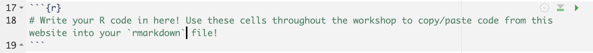
💡 You can run the code inside a cell by using the green arrow button on the top right!
Just to give you an idea of how nice and powerful rmarkdown is, this whole website has been built using it and the code chunks you see in this site are actual R code blocks inside an rmarkdown file!
The analyses that we are going to conduct require specific packages. In R, packages are collections of functions which help us perform standardized workflows. In the code chunk below, we instruct R to install the packages that we will need later on throughout the workshop.
💡 Copy and paste this and the other code chunks from here to your R script to follow.
# Install packages from Bioconductor
if (!require("BiocManager", quietly = TRUE))
install.packages("BiocManager")
BiocManager::install()
# Install packages from CRAN
install.packages("tidyr")
install.packages("dplyr")
install.packages("rmarkdown")
# For differential expression
BiocManager::install("vsn")
BiocManager::install("edgeR")
install.packages("statmod")
# For visualizations
install.packages("hexbin")
install.packages("pheatmap")
install.packages("RColorBrewer")
install.packages("ggrepel")
install.packages("ggpubr")
install.packages("png")
install.packages("ggarchery")
# For conversion between gene IDs
BiocManager::install("org.Hs.eg.db")
# For downstream analyses
install.packages("msigdbr")
BiocManager::install("fgsea")
BiocManager::install("clusterProfiler")
BiocManager::install("BioNERO")
install.packages('networkD3')
# Remove garbage
gc()During the installation, you will see many messages being displayed on your R console, don’t pay too much attention to them unless they are red and specify an error!
If you encounter any of these messages during installation, follow this procedure here:
# R asks for package updates, answer "n" and type enter
# Question displayed:
Update all/some/none? [a/s/n]:
# Answer to type:
n
# R asks for installation from binary source, answer "no" and type enter
# Question displayed:
Do you want to install from sources the packages which need compilation? (Yes/no/cancel)
# Answer to type:
noHopefully all packages were correctly installed and now we can dive a bit deeper into the theoretical basics of RNA sequencing!
With bulk RNA sequencing technologies, the goal is to capture average gene expression levels across pooled cell populations of interest. This is achieved by capturing all RNA transcripts from a sample and sequencing them in an automated way to ensure the adequate throughput needed for answering the biological hypotheses behind the experiment. The main limitation of bulk RNA-seq is that we lose the ability to distinguish between gene expression profiles of rare cell populations.
🤔 What are some of the key differences between RNA sequencing and qPCR?
The motivations behind an RNA sequencing experiment can be summarized between gathering a set of both quantitative but also qualitative observations.
| Quantitative | Qualitative |
|---|---|
| Identify differentially expressed genes | Annotate transcripts |
| Detect different Isoform expression | Alternative splicing analysis |
| Identify gene fusion events |

A bulk RNA-seq experiment is articulated in the following steps:
Experimental design: sample choice and hypothesis
RNA extraction
cDNA preparation: retrotranscription of RNA molecules
Library preparation: fragmentation of cDNA molecules and ligation of adapters
Sequencing
Data processing: raw read QC
Data analysis: extract meaningful biological insights
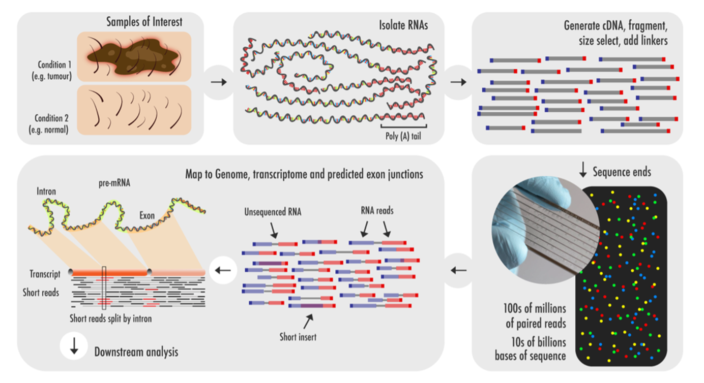
A well thought-out experimental design is a crucial factor in achieving success. The best strategy will primarily depend on the experiment’s goals, the hypotheses being tested, and the type of data expected to be obtained.
Replication is a key part of the scientific method and bulk RNA-seq experiments are no exception to the norm. Guideline suggest to perform 2-5 replicates for each condition of interest!
🤔 Do you know what the differences between a technical and biological replicates are?
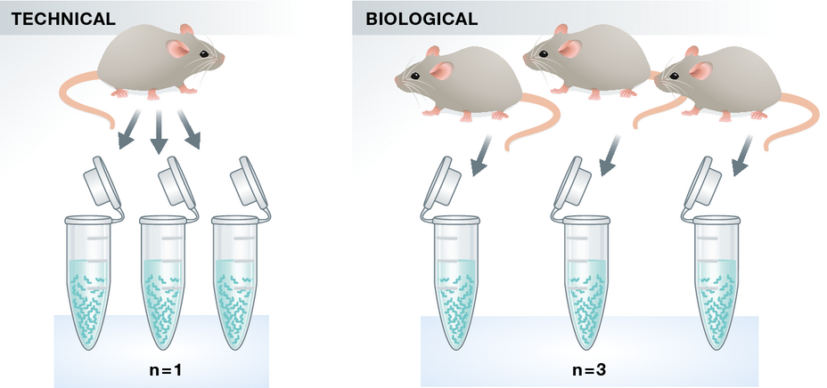
Technical Replicates: use the same biological specimen (sample) from the same experimental condition to repeat the technical or experimental steps in order to accurately measure technical variation and remove it during analysis. These are normally dispensable given the low technical variation with NGS technologies.
Biological Replicates: use different biological samples of the same condition to measure the biological variation between samples. Of key importance for the analysis. The higher the number of biological replicates, the more precise the estimate of average gene expression. They’re even more important than sequencing depth in defining differentially expressed genes with confidence.
Batch effect refers to the unwanted variability in data that arises due to differences in how samples are processed, handled, or analyzed across different experimental batches or conditions, rather than being due to the biological variation of interest.
Sources of batch effect can arise from:
💡 If you cannot avoid batch effects, do not confound your experiment by batch but instead randomize samples across batches!
What follows is a basic yet intuitive visualization of what the above phrase means in practice… in a poorly-designed experiment:
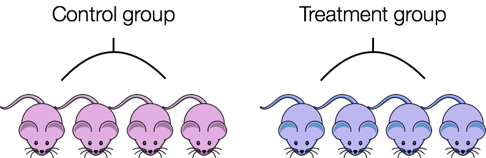
And in a well-designed experiment with following analyses in mind:
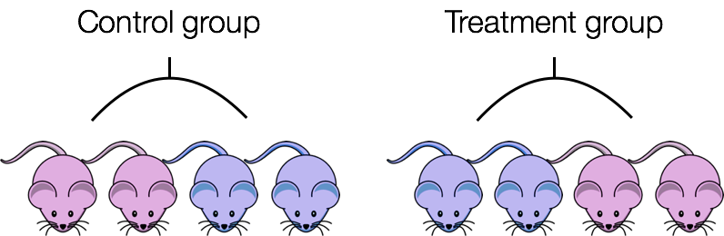
This approach ensures that any potential batch effects — such as differences in RNA extraction, handling, or processing — are equally represented in both the control and treatment groups, thereby helping to isolate biological variation from technical noise.
e.g If you need to extract RNA in two batches due to the number of samples, avoid extracting only control samples in one batch and only treated samples in the second one. Doing so could introduce batch-specific technical variations that would make it difficult to differentiate between true biological differences and technical artifacts. Instead, ensure that you equally distribute control and treated samples across both batches.
🤔 Could you think about another example of how to avoid batch effect in your experimental set up?
The first step is of course to materially extract RNA molecules from our set of cells of interest!
Most commonly used extraction methods are organic extraction methods (phenol-containing solutions) or filter-based (membranes). Then, in order to eliminate DNA contamination in your sample and increase RNA purity, DNAse treatment is performed. Certain forms of contamination can be detected using UV spectroscopy and the calculation of absorbance ratios. Good quality RNA will have an A260/280 ratio of 1.7 to 2.1 and A260/230 of 2.0 to 2.2. A260/280 lower than 1.7 may indicate protein contamination, whereas A260/230 less than 1.8 may indicate the presence of organics (e.g. phenol or guanidine) leftover from the extraction protocol.
🚨 Degradation of RNA breaks up long RNA molecules into shorter fragments, that are more difficult to assemble bioinformatically, and therefore RNA sequence information can be lost!
Following that, RNA is quantified and its integrity evaluated (by agarose gel electrophoresis or by Bioanalyzer or Tape station). With both methods you should recognize the most abundant RNAs in our cells: the ribosomal subunits 18S and 28S (that should be twice 18S). The image below shows 3 bioanalyzer profiles at decreasing levels of RIN (RNA Integrity Number).
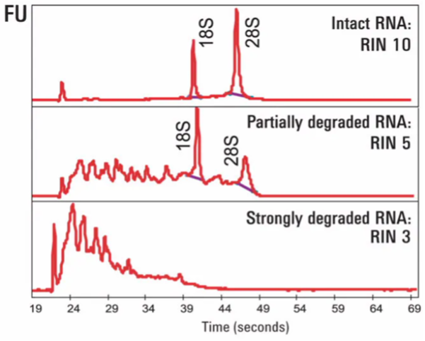
🤔 Based on what we’ve said about batch effects, would you use the same RNA extraction protocol or different ones for your samples and/or conditions?
As we know RNA can come in many forms and functions, so depending on your research interest, you might be prompted to look at specific RNA species over others. This means that we need to enrich for specific sets of RNA molecules among the many ones that cells produce to function! Below we can find a series of protocols optimized to capture different RNA species:
| Method | Application | Limitations |
|---|---|---|
| Poly(A) selection | mRNA sequencing | Excludes non-polyadenilated species (rRNAs, tRNAs) |
| rRNA Depletion | mRNA, small RNAs and lncRNAs | Can reduce total RNA yield |
| Total RNA-seq | Comprehensive transcriptome analysis | High rRNA content and reduced overall sensitivity |
| miRNA Enrichment | Small RNA sequencing (miRNAs, snoRNAs, etc.) | Excludes large RNAs, and only focuses on small RNA species |
| Capture-based Enrichment | Targeted RNA sequencing | Only focuses on specific sequences, not suitable for global analysis |
Starting from our precious mRNA molecule that has been isolated from our sample, we transform it into DNA by means of retrotranscription, this process creates what is known as cDNA. cDNA molecules can be very large and due to technical constraints we need to fragment them into smaller pieces. All these pieces are then ligated to a set of sequences known as adapters.

Importantly, Since there are many genomic regions that generate transcripts from both strands, identifying the polarity of a given transcript provides essential information about the possible function of a gene.
However, in canonical NON-STRANDED library preparation random primers are used for first- and second-strand synthesis of cDNA. The resulting sequencing products from the two antisense transcripts are identical and cannot be distinguished when sequenced. Thus, information about directionality is lost during cDNA synthesis.
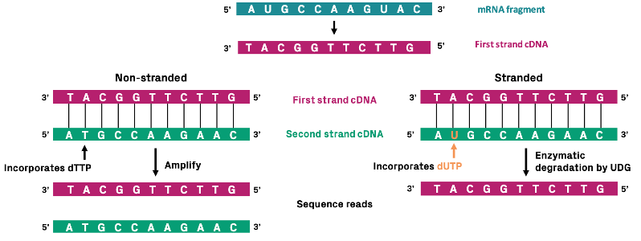
On the contrary, STRAND-SPECIFIC library preparation distinguishes the first and second strands of cDNA by incorporating uracil instead of thymine to label the second strand. After adapter ligation, amplification of the second strand is blocked. This can be accomplished by performing uracil-specific digestion before amplification or by using a DNA polymerase that is unable to amplify uracil-containing templates. As a result, all sequencing products from a particular RNA molecule will have the same orientation.
Next Generation Sequencing technologies (Illumina/PacBio) allow experimenters to capture the entire genetic information in a sample in a completely unsupervised manner. The process works with an approach called sequencing-by-synthesis or SBS for short.
💡 Great info can be found at the Illumina Knowledge page
This means that strands are sequenced by re-building them using the natural complementarity principle of DNA with fluorescently labelled bases which get detected and decoded into sequences. On illumina flow-cells this process happens in clusters, to allow for proper signal amplification and detection, as shown in the movie below.
As we have seen in the video, adapter sequences are used by the sequencing machine to hybridize cDNA fragments to the flow cell and form sequencing clusters.
A few key parameters to consider when using NGS technologies (and this holds true for all involved omics approaches) include:
Sequencing Depth: as the name suggests, this represents the final objective in terms of number of reads obained in the experiment, we can go shallow for a quick snapshot of highly expressed genes (5 to 30 million reads), or very deep to catch that rarely expressed variant we are interested in (150 to 200 million reads)!
Read Length: this is another parameter set by the operator and determines the amount of snapshots we take of the flowcell with its clusters after each hibridization round determining “how far into” the cDNA molecule we look (typically 50 to 75 bp) - longer reads are useful if we are aiming for novel transcript assembly and isoform identification.
Sequencing Mode: we can either sequence our library from one side in single-end mode or from both sides of each insert using paired-end sequencing which generates two reads per fragment. The latter is more expensive but fondamental for the detection of gene isoforms since we get more information.
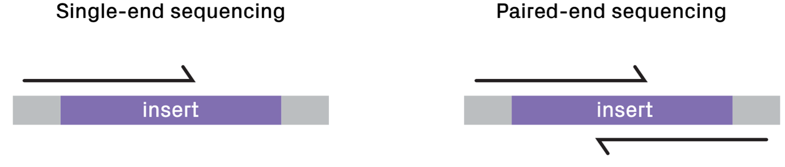
💡 Additional information and guidelines on sequencing depth and read lenght can be found on ENCODE Consortium’s website!
The raw output of any sequencing run consists of a series of sequences (called reads). These sequences can have varying length based on the run parameters set on the sequencing platform. Nevertheless, they are made available for humans to read under a standardized file format known as FASTQ. This is the universally accepted format used to encode sequences after sequencing. An example of real FASTQ file with only two reads is provided below.
@Seq1
AGTCAGTTAAGCTGGTCCGTAGCTCTGAGGCTGACGAGTCGAGCTCGTACG
+
BBBEGGGGEGGGFGFGGEFGFGFGGFGGGGGGFGFGFGGGFGFGFGFGFG
@Seq2
TGCTAAGCTAGCTAGCTAGCTAGCTAGCTAGCTAGCTAGCTAGCTAGC
+
EEEEEEEEEEEEEEEEEEEEEEEEEEEEEEEEEEEEEEEEEEEEEEFASTQ files are an intermediate file in the analysis and are used to assess quality metrics for any given sequence. The quality of each base call is encoded in the line after the + following the standard Phred score system.
💡 Since we now have an initial metric for each sequence, it is mandatory to conduct some standard quality control evaluation of our sequences to eventually spot technical defects in the sequencing run early on in the analysis.
Computational tools like FastQC aid with the visual inspection of per-sample quality metrics from NGS experiments. Some of the QC metrics of interest to consider include the ones listed below, on the left are optimal metric profiles while on the right are sub-optimal ones:
Per-base Sequence Quality  This uses box plots to highlight the per-base quality along all reads in the sequencing experiment, we can notice a physiological drop in quality towards the end part of the read.
This uses box plots to highlight the per-base quality along all reads in the sequencing experiment, we can notice a physiological drop in quality towards the end part of the read.
Per-sequence Quality Scores  Here we are plotting the distribution of Phred scores across all identified sequences, we can see that the high quality experiment (left) has a peak at higher Phred scores values (34-38).
Here we are plotting the distribution of Phred scores across all identified sequences, we can see that the high quality experiment (left) has a peak at higher Phred scores values (34-38).
Per-base Sequence Content  Here we check the sequence (read) base content, in a normal scenario we do not expect any dramatic variation across the full length of the read since we should see a quasi-balanced distribution of bases.
Here we check the sequence (read) base content, in a normal scenario we do not expect any dramatic variation across the full length of the read since we should see a quasi-balanced distribution of bases.
Per-sequence GC Content  GC-content referes to the degree at which guanosine and cytosine are present within a sequence, in NGS experiments which also include PCR amplification this aspect is crucial to check since GC-poor sequences may be enriched due to their easier amplification bias. In a normal random library we would expect this to have a bell-shaped distribution such as the one on the left.
GC-content referes to the degree at which guanosine and cytosine are present within a sequence, in NGS experiments which also include PCR amplification this aspect is crucial to check since GC-poor sequences may be enriched due to their easier amplification bias. In a normal random library we would expect this to have a bell-shaped distribution such as the one on the left.
Sequence Duplication Levels  This plot shows the degree of sequence duplication levels. In a normal library (left) we expect to have low levels of duplication which can be a positive indicator of high sequencing coverage.
This plot shows the degree of sequence duplication levels. In a normal library (left) we expect to have low levels of duplication which can be a positive indicator of high sequencing coverage.
Adapter Content  In NGS experiments we use adapters to create a library. Sometimes these can get sequenced accidentally and end up being part of a read. This phenomenon can be spotted here and corrected later using a computational approach called adapter trimming, visible in next section’s figure.
In NGS experiments we use adapters to create a library. Sometimes these can get sequenced accidentally and end up being part of a read. This phenomenon can be spotted here and corrected later using a computational approach called adapter trimming, visible in next section’s figure.
Once we are satisfied with the quality of our pool of sequences, we need to map them back to the transcripts to which they belonged originally when we produced cDNA molecules from RNA. This process of mapping is needed to understand from which genes were transcripts generated and therefore is an essential and very important step of data processing!

Alignment of trimmed reads to a reference genome or transcriptome.
When we perform an RNA-seq experiment, we need to understand where the millions of reads that we get come from in the genome, in other words, which genes (by being transcribed) contribute to what degree to the amount of signal that we get in each experiment! Since every mRNA (hence cDNA) is different among individuals, we can use a general genome which is manually built and onto which we can place our reads to check for matches and mismatches.
💡 The Human Genome Project for example released the very first assembled reference genome in 2003, using sequencing data coming from at least 10 different individuals and containing more than 3 billion bases! Currently, the most used “build” of the human genome is the one called GRCh37, released in 2013.
Tools like STAR and BWA-MEM are designed to achieve great speed and accuracy for the computationally expensive task of read alignment.
The results of the alignment procedure is a different set of files in SAM (Standard Alignment Map) format which get compressed into their binary representation, BAM files. These are usually one for each analyzed sample and encode the position of all the identified reads along the genome as well as alignment quality metrics for QC, which can be carried out with tools like MultiQC.
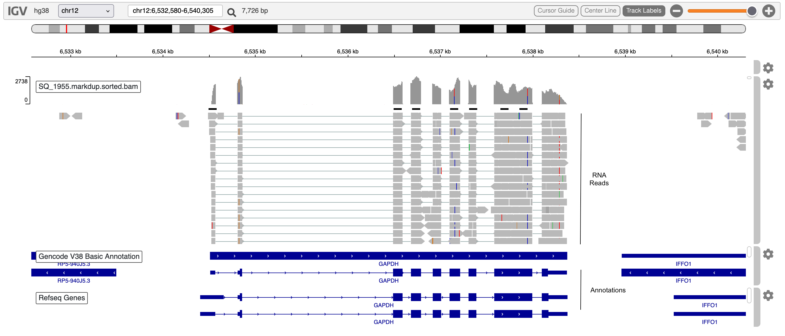
IGV screenshot of a single BAM file showing reads at the GAPDH locus.
💡 All of these pre-processing steps, which are computationally expensive, are usually integrated in command-line pipelines which connect inputs and outputs of these difference procedures in a streamlined manner. An example is the RNA-seq pipeline provided by the nf-core community.
After sequences have been aligned to their respective place on the genome, it is time to actually count how many times a given sequence is found on any given gene (or transcripts, or exons or others..), this will actually be our gene expression measurement!

There are many ways to achieve this task but among the most used is the featureCounts tool. In the end, for every sample, we will end up with a number for each gene (or transcripts), these are called gene (transcript) counts.
These are usually summarized in a table, called gene expression table, where each sample is a column and each row a different gene. We will now load one and take a closer look, this will be our starting point in the hands-on analysis of bulk RNA-seq data.
💡 What is the difference between a gene and a transcript?
Sequencing technologies have been widely adopted even before the early 2010s, with many fields and laboratories employing sequencing to answer all kinds of biologically relevant questions in the most diverse settings. But where does all that data go? How many experiments and Gb (or even Tb 😳) of data have been generated? How can you look for them? In which form are they stored?
💡 These are all very relevant questions that deserve an answer! In fact, you might be thinking of an experiment that somebody around the world did 5 years ago already, knowing where to look for the data might save you loads of time and save your lab a few thousand euros!
As we have seen, sequencing data is usually stored as fastq files, these are also known as raw files. Raw sequencing data is usually under controlled access. Since it contains raw genomic sequences, the data could be potentially linked to its original donor subject, hence it is considered sensitive data. Data use is regulated by different agencies and protocols worldwide.
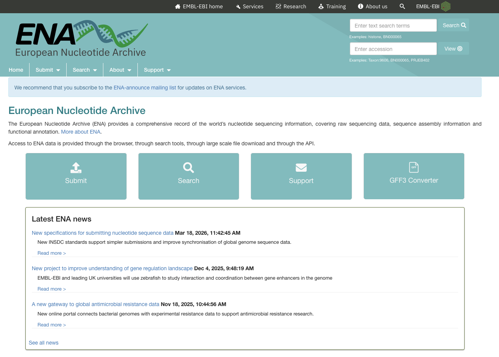
Down here we report some of the main sources of raw sequences.
| Archive | Name | Data Type | Country |
|---|---|---|---|
| ENA | European Nucleotide Archive | Raw | Europe (EMBL) |
| SRA | Sequence Read Archive | Raw | USA (NCBI) |
| EGA | European Genome-phenome Archive | Raw | Europe |
| DDBJ | DNA DataBank of Japan | Raw | Japan |
| OMIX | National Genomics Data Center Database | Raw/Processed | China |
We will load a table of data from this study published in Nature Communications on tumor-infiltrating CD8+ T-cells. The original data supporting the findings of the study has been deposited on the Gene Expression Omnibus (GEO) data portal under accession number GSE120575. This is the place where all studies publish the processed sequencing data from their analysis in order for other researchers to download it and reproduce their findings or test their own hypotheses.
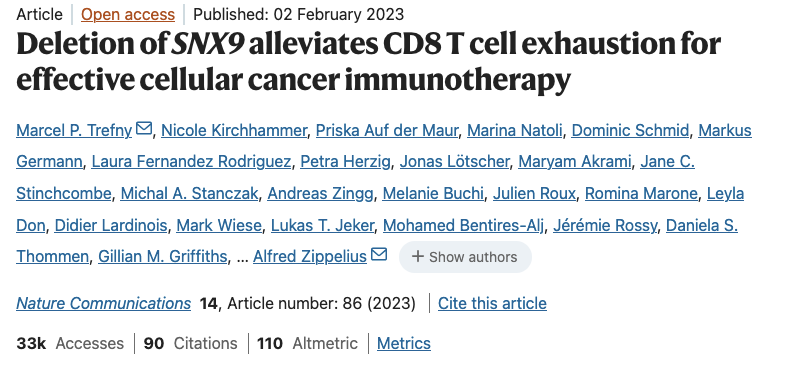
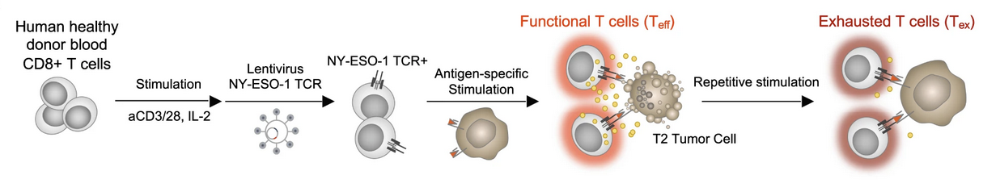
Briefly, the authors collected bulk RNA-seq data from different subpopulations of transgenic CD8+ T cells including ones known as exhausted which are particularly relevant in the context of cancer immunotherapy. These cells are in fact consistently exposed to antigens in the tumor microenvironment and become dysfunctional, unable to fight cancer cells which are therefore free to keep expanding. Understanding and preventing the process of T cell exhaustion poses and interesting and relevant challenge in the field of immunotherapies for a variety of cancer types.
We have already downloaded the data and inserted it in a Google Drive folder organizing it as follows:
raw_counts.csv: the gene by sample matrix containing the number of times each gene is detected in each sample (our gene expression values)
samples_info.csv: the table containing samples information, known as metadata, which tells us about the biological meaning of each sample
Open the folder through your Google Drive (this step is important), check the presence of the files in the browser and then only AFTER having done this, run the code below. After having opened the Google Drive folder, follow the code chunk below where we are going to load the data and create two new variables in our R session, one for each table.
🚨 NOTE: After you run the code below, look into your
Rconsole and check if you are prompted to insert your Google account information. Do so and then follow the instructions to connect to your Google account in order to download the data from the shared MOBW2025 folder!
# Load installed packages with the "library()" function
library("dplyr")
# Load files (make sure that you have them in your `data` folder!)
# Table 1: gene counts
counts <- read.csv("./data/raw_counts.csv")
rownames(counts) <- counts$X
counts$X <- NULL
# Table 2: sample information (metadata)
samples <- read.csv("./data/samples_info.csv")
rownames(samples) <- samples$X
samples <- samples[,c("Donor","SampleGroup","sex")]We can now explore the data that we have just loaded in the current R session to familiarize with it.
# Check out the counts
head(counts, 10)| BSSE_QGF_204446 | BSSE_QGF_204447 | BSSE_QGF_204448 | BSSE_QGF_204449 | BSSE_QGF_204450 | BSSE_QGF_204451 | BSSE_QGF_204452 | BSSE_QGF_204453 | BSSE_QGF_204458 | BSSE_QGF_204459 | BSSE_QGF_204460 | BSSE_QGF_204461 | BSSE_QGF_204462 | BSSE_QGF_204463 | BSSE_QGF_204464 | BSSE_QGF_204465 | |
|---|---|---|---|---|---|---|---|---|---|---|---|---|---|---|---|---|
| ENSG00000228572 | 0 | 0 | 0 | 0 | 0 | 0 | 0 | 0 | 0 | 0 | 0 | 0 | 0 | 0 | 0 | 0 |
| ENSG00000182378 | 0 | 0 | 0 | 0 | 0 | 0 | 0 | 0 | 0 | 0 | 0 | 0 | 0 | 0 | 0 | 0 |
| ENSG00000226179 | 0 | 0 | 0 | 0 | 0 | 0 | 0 | 0 | 0 | 0 | 0 | 0 | 0 | 0 | 0 | 0 |
| ENSG00000281849 | 0 | 0 | 0 | 0 | 0 | 0 | 0 | 0 | 0 | 0 | 0 | 0 | 0 | 0 | 0 | 0 |
| ENSG00000280767 | 0 | 0 | 0 | 0 | 0 | 0 | 0 | 0 | 0 | 0 | 0 | 0 | 0 | 0 | 0 | 0 |
| ENSG00000185960 | 0 | 0 | 0 | 0 | 0 | 0 | 0 | 0 | 0 | 0 | 0 | 0 | 0 | 0 | 0 | 0 |
| LRG_710 | 0 | 0 | 0 | 0 | 0 | 0 | 0 | 0 | 0 | 0 | 0 | 0 | 0 | 0 | 0 | 0 |
| ENSG00000237531 | 0 | 0 | 0 | 0 | 0 | 0 | 0 | 0 | 0 | 0 | 0 | 0 | 0 | 0 | 0 | 0 |
| ENSG00000198223 | 0 | 0 | 0 | 0 | 0 | 0 | 0 | 0 | 0 | 0 | 0 | 0 | 0 | 0 | 0 | 0 |
| ENSG00000265658 | 0 | 0 | 0 | 0 | 0 | 0 | 0 | 0 | 0 | 0 | 0 | 0 | 0 | 0 | 0 | 0 |
We can then check the shape of our counts table (i.e. how many different transcripts we are detecting and how many different samples?)
🤔 How many rows are we expecting to be present in our counts table? hint: think of the type of experiment and the readout we are expecting!
We can see that our table contains count information for 16 samples.
💡 In R, these table object are called
data.frames,tibblesare just like them but with some improved functionalities provided by thetidyverselibrary.
We can also inspect the metadata from the samples which is stored in the samples variable we created above.
Metadata refers to that class of accessory data to the main experimental readout. In the case of this published dataset, the main data refers to the actual gene expression table with the associated counts measurement for each sample. Each sample then has associated information used to further describe it (e.g. type of cells, patient ID, treatment status, experimental batch…), as we have previously seen, this information is instrumental to bioinformaticians to avoid pitfalls in the analysis. In the case of our data, this information is contained in the samples table. We can use R’s functionality to explore it and visualize it in order to get an idea about the dataset!
# What does the table look like?
samples| Donor | SampleGroup | sex | |
|---|---|---|---|
| BSSE_QGF_204446 | HD276 | Trest | Male |
| BSSE_QGF_204447 | HD276 | Ttumor | Male |
| BSSE_QGF_204448 | HD276 | Teff | Male |
| BSSE_QGF_204449 | HD276 | Tex | Male |
| BSSE_QGF_204450 | HD280 | Trest | Male |
| BSSE_QGF_204451 | HD280 | Ttumor | Male |
| BSSE_QGF_204452 | HD280 | Teff | Male |
| BSSE_QGF_204453 | HD280 | Tex | Male |
| BSSE_QGF_204458 | HD286 | Trest | Male |
| BSSE_QGF_204459 | HD286 | Ttumor | Male |
| BSSE_QGF_204460 | HD286 | Teff | Male |
| BSSE_QGF_204461 | HD286 | Tex | Male |
| BSSE_QGF_204462 | HD287 | Trest | Female |
| BSSE_QGF_204463 | HD287 | Ttumor | Female |
| BSSE_QGF_204464 | HD287 | Teff | Female |
| BSSE_QGF_204465 | HD287 | Tex | Female |
# What is the shape of this samples table?
dim(samples)[1] 16 3In this case, this samples table has as many rows (16) as there are samples (which in turn is equal to the number of columns in the counts table), with columns containing different types of information related to each of the samples in the analysis.
RWe can take advantage of the way R handles tabular data to easily plot information and get a visual sense of the dataset. Exploring data in this way is very important, it allows us to detect flaws and weird effects in the data early on, so to avoid any misinterpretation which can greatly impact downstream analysis. For example, taking our samples table, we can ask whether covariates are balanced in the data or some categories are more/less represented than others.
For example, let’s say we want to understand how many sample in our data come from patients with different genders!
We can use R’s go-to plotting library called ggplot2 to feed it the samples table and tell it what we want to plot and how.
💡 when visualizing data, it is important to understand the variables we want to work with. Are we plotting univariate or bivariate data? Are we interested in continuous or categorical variables?
Let’s first plot a barplot with gender information, then we’ll discuss a bit more about the code and ggplot’s grammar of graphics.
library("ggplot2")
# Simple and ugly
ggplot(samples, aes(x=sex)) + geom_bar()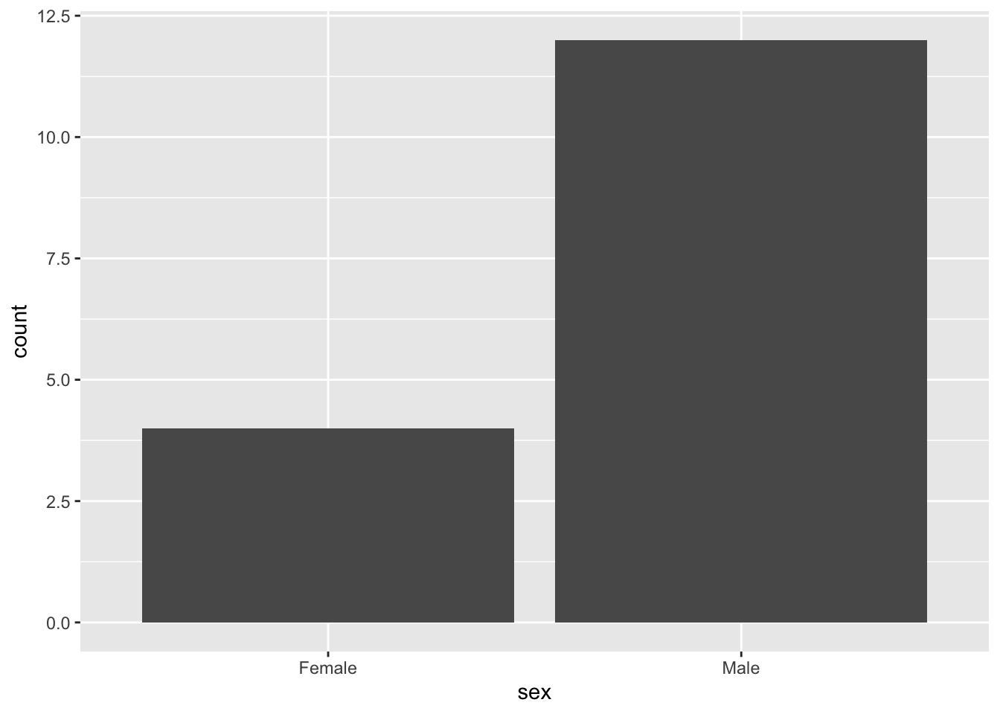
Let’s make a nicer one! Nice graphs convey information more easily and (most importantly) efficiently!
# A bit more work but nicer and more intuitive
ggplot(samples, aes(x=sex, fill=sex)) +
geom_bar(width=0.7) +
scale_fill_manual(values=c('Female'='#FD96A9', 'Male'='#BBCBCB')) +
theme_minimal()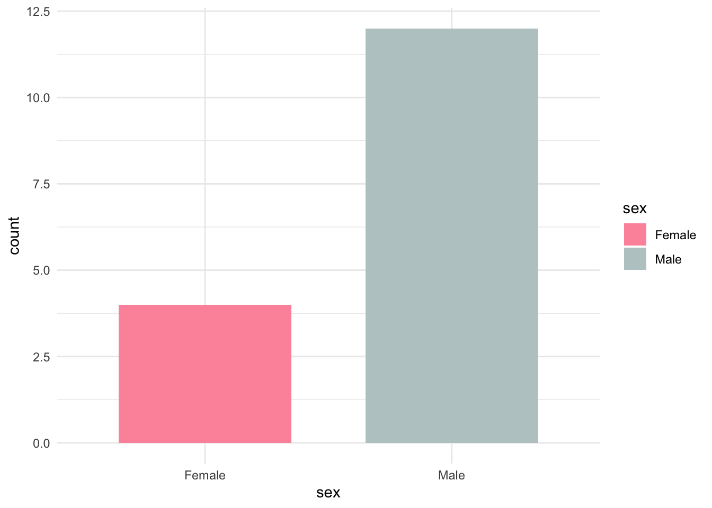
That’s better! The trick to ggplot is the ability to map variables to the x and y axes with the aesthetics function aes(). this is just the first layer, then from this we can build up our plot deciding what plot to draw (in this case a barplot hence geom_bar()) and further customize it.
We can use the same approach to understand how experimental categories are distributed across our data. In a real-life scenario, we should already know this information because we were the ones designing the experiment in the first place, so we should know how many replicates we need!
🚀 Try to draw a barplot showing the amount of sample that we have for each experimental condition in the data!
Let’s save this object with samples information in a file on this cloud session, this might be needed later if we end up in some trouble with the R session! This is a file format where columns are separated by commas. You might be familiar with this format if you have worked quite a bit in Excel. In R, we can save tabular data with the write.table() function specifying the location (the file name) we want. This is useful in the case our R session dies or we decide to interrupt it. In this case we will not have to run the whole analysis from the beginning and we can just source the file and load it!
write.table(samples, "samples_table.csv", sep = ",", quote = FALSE)We can load the object back into the current session by using the following code line:
samples <- read.table("samples_table.csv", sep = ",")💡 We will also repeat this procedure with the results of the differential expression analysis in order to avoid repeating work we have already done in case of any trouble!
Now that we have our objects correctly loaded, we can dive into the actual RNA-seq analysis.
We can summarize today’s class using an important set of questions to consider when you’ll be designing your own RNA-seq experiment:
Let’s also go through what we have seen so far:
R)R interface